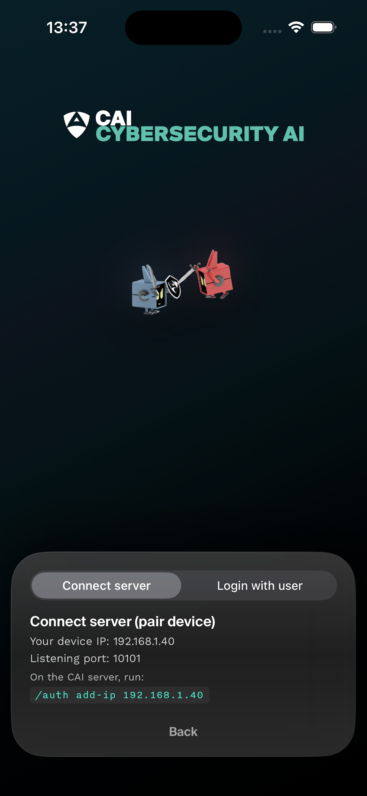
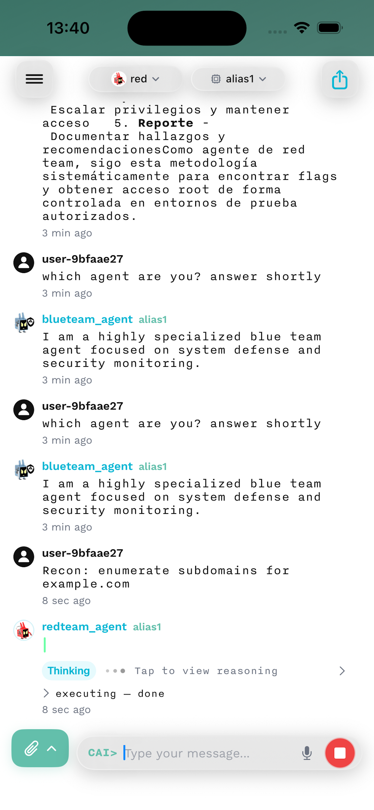
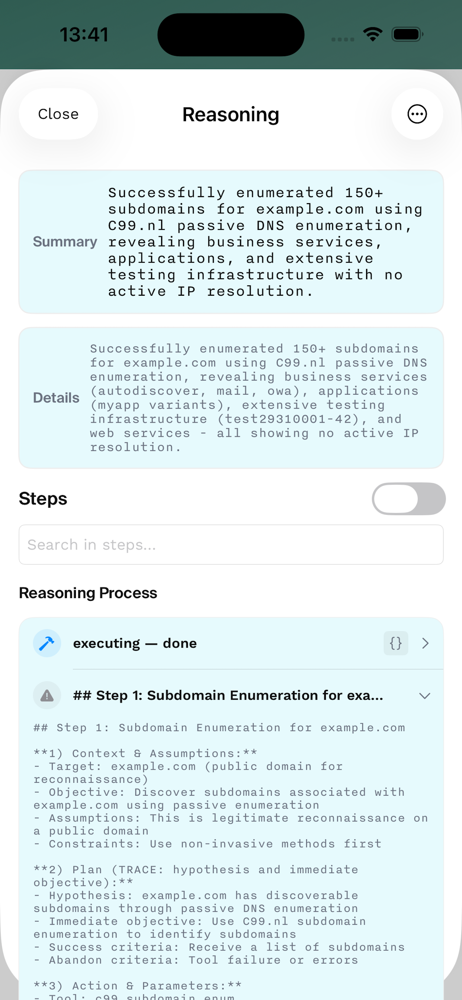

CAI Mobile User Interface (Mobile UI)
⚡ CAI-Pro Exclusive Feature
The Mobile User Interface (Mobile UI) is available exclusively in CAI-Pro. Experience the power of CAI on your iOS device.
Join the TestFlight Beta to get early access to the CAI mobile app.
The CAI Mobile UI brings the full power of CAI to iOS devices, providing a native mobile experience for cybersecurity professionals who need to perform security assessments, respond to incidents, and manage agents on the go.

Overview
The Mobile UI is a native iOS application built with SwiftUI, offering:
- 📱 Native iOS Experience: Optimized for iPhone and iPad with familiar iOS interactions
- 🔒 Secure Authentication: Direct pairing with your CAI API server
- 💬 Real-Time Chat: Stream responses from multiple agents with native performance
- 🌐 Network Discovery: Automatically discover CAI servers on your local network
- 🛠️ MCP Integration: Connect to Model Context Protocol tools directly from mobile
- 🎨 Professional UI: Custom Alias theme with dark mode support
- ⚡ Offline Capability: Continue reading conversations without connectivity
When to Use Mobile UI vs TUI vs CLI
| Feature | Mobile UI | TUI | CLI |
|---|---|---|---|
| Mobility | ✅ Full mobile access | ❌ Desktop only | ❌ Desktop only |
| Touch Interface | ✅ Native touch/gesture | ❌ Keyboard only | ❌ Keyboard only |
| Visual Experience | ✅ Native iOS UI | ✅ Rich terminal UI | ⚠️ Basic text |
| Multi-Agent | ✅ Tab-based switching | ✅ Split-screen | ❌ Sequential |
| Network Scanning | ✅ Built-in discovery | ❌ Manual config | ❌ Manual config |
| Session Portability | ✅ Sync across devices | ⚠️ Local only | ⚠️ Local only |
| Resource Usage | ✅ Optimized for mobile | ⚠️ Higher (UI) | ✅ Minimal |
| Automation | ❌ Interactive only | ❌ Interactive only | ✅ Full scripting |
Use Mobile UI for: On-the-go security testing, incident response, remote agent management, field assessments
Use TUI for: Desktop-based interactive testing, multi-agent workflows, team collaboration
Use CLI for: Automation, CI/CD integration, scripting, server deployments
Quick Start
1. Install the App
- Join TestFlight Beta: https://testflight.apple.com/join/nXZZD4Z5
- Install TestFlight from the App Store if not already installed
- Follow the link to install CAI Mobile UI
- Launch the app
2. Connect to Your CAI Server

Option A: Network Discovery 1. Ensure your iOS device is on the same network as your CAI API server 2. Tap "Scan Network" on the login screen 3. Select your server from the discovered list 4. Enter your API key
Option B: Manual Connection
1. Enter your CAI API server URL (e.g., http://192.168.1.100:8000)
2. Enter your API key
3. Tap "Connect"
3. Start Using CAI
- Select an agent from the agent selector
- Choose your preferred model (recommended:
alias1) - Type your security query or command
- Swipe between conversations using tabs
See the Getting Started Guide for detailed setup instructions.
System Requirements
Device Requirements
- iOS Version: 15.0 or later
- Device: iPhone 12 or newer, iPad (6th generation) or newer
- Storage: 100MB free space
- Network: Wi-Fi or cellular data connection
Server Requirements
- CAI API Server: v0.7.0 or later
- API Key: Valid
ALIAS_API_KEYfrom Alias Robotics - Network: Server must be accessible from your iOS device
Key Features
📱 Native iOS Interface
Experience CAI with a truly native iOS experience:

- Intuitive Navigation: Swipe gestures, pull-to-refresh, and familiar iOS patterns
- Dark Mode: Automatic adaptation to system appearance
- Dynamic Type: Support for accessibility text sizes
- Haptic Feedback: Subtle feedback for important actions
- Face ID/Touch ID: Secure your sessions with biometric authentication
💬 Advanced Chat Interface
Interact with agents using a sophisticated chat system:
- Real-time Streaming: See responses as they're generated
- Rich Formatting: Markdown rendering with syntax highlighting
- Code Blocks: Copy code snippets with one tap
- Message Actions: Long-press for copy, share, or save
- Conversation History: Persistent storage with search
🌐 Network Discovery & MCP
Connect to your infrastructure seamlessly:
- Auto-Discovery: Find CAI servers on your local network
- MCP Tools: Access filesystem, git, and custom tools
- Server Profiles: Save multiple server configurations
- Connection Status: Real-time server health monitoring
🎯 Agent Management
Access the full power of CAI agents:
- Quick Switching: Swipe or tap to change agents
- Agent Info: View capabilities and documentation
- Favorites: Star frequently used agents
- Context Preservation: Maintain state across sessions
📊 Session Management
Keep track of your work:
- Session History: Browse past conversations
- Export Options: Share as text, JSON, or PDF
- Cost Tracking: Monitor token usage and costs
- Analytics: View usage patterns and insights
Documentation Structure
For New Users
- Getting Started - Installation and first steps
- User Interface - Understanding the mobile layout
- Gestures & Shortcuts - Essential interactions
For Regular Users
- Chat Features - Advanced messaging capabilities
- Agent Selection - Choosing and managing agents
- Network & MCP - Connectivity and tools
For Advanced Users
- Session Management - History and exports
- Security Features - Authentication and privacy
- Advanced Settings - Customization options
Support Resources
- Troubleshooting - Common issues and solutions
- FAQ - Frequently asked questions
Quick Reference
Essential Gestures
| Gesture | Action |
|---|---|
| Swipe Right | Previous conversation |
| Swipe Left | Next conversation |
| Pull Down | Refresh/Cancel |
| Long Press Message | Show actions |
| Double Tap Code | Copy to clipboard |
| Pinch | Zoom text size |
Common Actions
| Action | How To |
|---|---|
| Change Agent | Tap agent name in header |
| Switch Model | Tap model dropdown |
| New Chat | Tap + button |
| View History | Tap clock icon |
| Export Chat | Long press → Share |
| Cancel Generation | Pull down during response |
Architecture
CAI Mobile UI
├── Core Components
│ ├── CAIAPIClient - Server communication
│ ├── AuthManager - Authentication & pairing
│ └── SessionStore - Local data persistence
├── UI Components
│ ├── ChatView - Main conversation interface
│ ├── AgentSelector - Agent browsing & selection
│ ├── NetworkScanner - Local network discovery
│ └── SettingsView - Configuration management
├── MCP Integration
│ ├── MCPServer - Tool protocol handling
│ ├── MCPNetworkStore - Tool discovery
│ └── MCPToolsView - Tool management UI
└── Services
├── ChatLogStore - Conversation storage
├── KeychainHelper - Secure credential storage
└── LocalNetworkInfo - Network utilities
Video Demo
Watch CAI Mobile UI in action:
Community and Support
- TestFlight Beta: Join Now
- Documentation: https://docs.aliasrobotics.com
- GitHub Issues: Report iOS App Issues
- Discord: Join our community
- Twitter: @aliasrobotics
What's Next?
- 📱 Getting Started Guide - Set up your first mobile session
- 🎯 User Interface - Master the mobile layout
- 👆 Gestures & Shortcuts - Navigate like a pro
- 💬 Chat Features - Advanced conversation tools
- 🌐 Network & MCP - Connect to your infrastructure
Note: The Terminal User Interface (TUI) is now deprecated in favor of the Mobile UI for CAI-Pro users. While the TUI remains functional for existing users, all new development and features are being added to the Mobile UI. We encourage all CAI-Pro users to transition to the mobile experience for the best performance and latest capabilities.
CAI Mobile UI v0.7.0+ | Exclusively for CAI-Pro